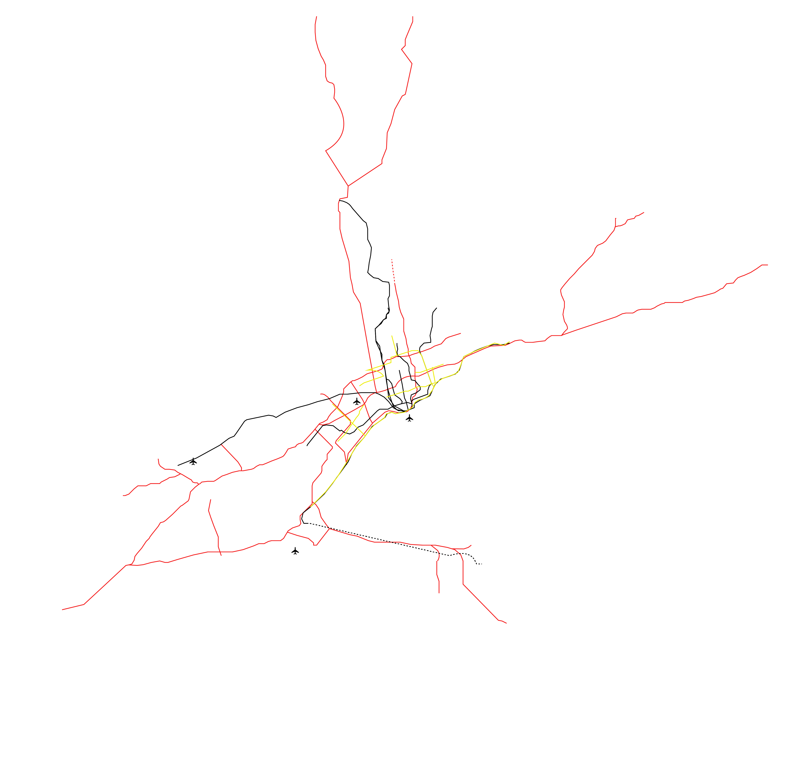
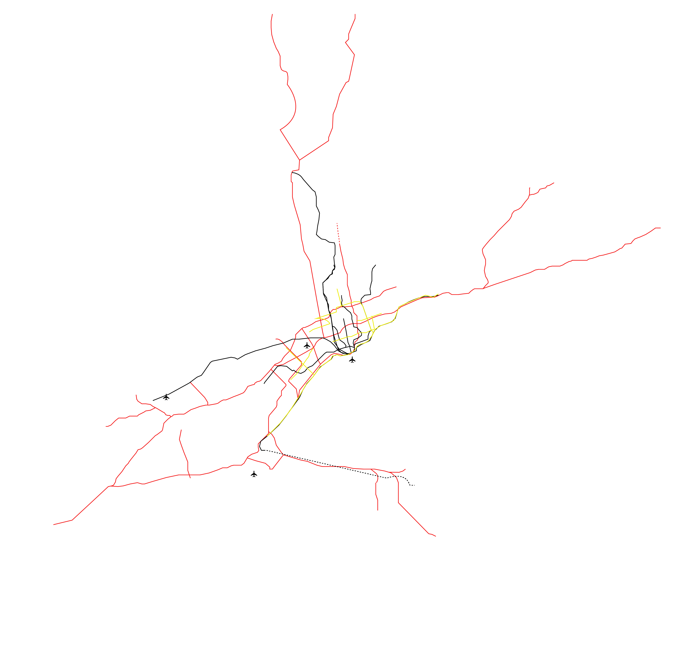

Rising Regionalization
As the number of people living in urban areas increase, regions become vaster and denser creating the areas known as mega-regions. The rapid growth of these mega-regions create new connections, which impact the climate, regional services (such as transit infrastructure), cultural identities, emergency response systems, watersheds, and economic exchanges.
 
